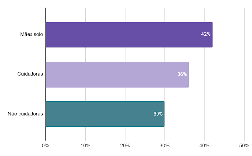

O Laboratório Think Olga [1] divulgou o relatório de uma pesquisa realizada em maio de 2023 com 1078 mulheres brasileiras com mais de 18 anos de todas as regiões do país sobre saúde mental, sofrimento e insatisfação feminina. O estudo revela dados alarmantes sobre os impactos das desigualdades de gênero sobre o bem-estar das mulheres brasileiras, que são ainda mais agravados pelas desigualdades raciais e de classe. No contexto do setembro amarelo, que chama atenção para as questões relacionadas à saúde mental, o Observatório das Desigualdades apresenta uma reflexão sobre a sobrecarga feminina e a saúde mental das mulheres a partir dos dados sintetizados no material da Think Olga. Durante a pandemia da Covid-19, a saúde mental foi um tema fundamental tanto pelos impactos negativos do isolamento social, quanto pelos efeitos que esta crise causou sobre os indivíduos. No caso das mulheres, a sobrecarga ainda maior com as tarefas domésticas, o aumento do volume de trabalho de cuidado e as dificuldades econômicas causadas pela pandemia são agravantes para a situação da saúde mental deste grupo, principalmente no caso de mulheres negras e pobres, que possuem ainda menos recursos para enfrentar essa situação. A pandemia deixou impactos sobre o bem-estar da população como um todo, merecendo atenção os aspectos de gênero que marcam esse problema, considerando que 67% dos novos casos de depressão e 68% dos novos casos de ansiedade registrados durante a pandemia foram de pacientes do sexo feminino (The Lancet, 2021 apud Think Olga, 2023). Ademais, observa-se a diferença significativa na prevalência de transtornos mentais entre homens e mulheres no Brasil, de acordo com os dados do Institute for Health Metrics and Evaluation (IHME) sintetizados no gráfico 1, sendo que as mulheres são maioria entre as pessoas diagnosticadas com depressão e com transtornos de ansiedade, enquanto os homens prevalecem nos transtornos relacionados ao uso de álcool e outras substâncias. Com isso, percebe-se a relevância da perspectiva de gênero para compreender a realidade da saúde mental da população brasileira e, mais do que isso, para estabelecer políticas públicas que atuem sobre as causas desses problemas.
Gráfico 1: Prevalência de transtornos por sexo (Brasil, 2019)
Fonte: Think Olga a partir de dados do Institute for Health Metrics and
Evaluation (IHME).
Em relação aos diagnósticos das entrevistadas, o levantamento mostrou que mais da metade delas enfrentavam algum tipo de transtorno mental, sendo a ansiedade o mais relevante (35%), seguido pela depressão (17%) e pela síndrome do pânico (7%), de acordo com os dados representados no gráfico 2.
Gráfico 2: Percentual das entrevistadas diagnosticadas por tipo de
transtorno mental (Brasil, 2023)
Fonte: Think Olga
A saúde mental, no entanto, não engloba apenas transtornos mentais diagnosticados, mas o conjunto das condições para o bem-estar do indivíduo que permitam lidar com suas atividades cotidianas e contribuir para a comunidade. Nessa linha, a pesquisa realizou uma análise dos sentimentos das mulheres ao longo do dia e de sua satisfação com diferentes aspectos da vida. A partir dos dados apresentados no gráfico 3, percebe-se que os sentimentos de ansiedade, estresse e irritabilidade estão presentes no cotidiano da maioria das entrevistadas, mostrando sinais de uma situação de sobrecarga e esgotamento mental feminino.
Gráfico 3: Sentimentos presentes no dia a dia das mulheres
entrevistadas (Brasil, 2023)
Fonte: Think Olga
Em relação à satisfação com as áreas da vida que impactam a saúde mental, a mensuração ocorreu por meio da classificação da satisfação das mulheres em uma escala de 0 a 10, em que 0 é extremamente insatisfeita e 10 é extremamente satisfeita. O resultado mostra que a área de maior insatisfação é a situação financeira (1,4), revelando um fator econômico marcante na satisfação das mulheres com a vida. Além disso, a pesquisa aponta algumas causas para a insatisfação, como a situação financeira restrita, as dívidas e a dependência financeira; em relação ao trabalho, a baixa remuneração, a sobrecarga com o trabalho doméstico e a falta de reconhecimento; e, em relação às relações interpessoais, a falta de amizades e a solidão/pouca interação social.
Gráfico 4: Índice de satisfação das mulheres entrevistadas com as
áreas da vida (Brasil, 2023)
Fonte: Think Olga
Considerando que a satisfação com a situação financeira foi levantada como um dos aspectos relevantes para a saúde emocional, sendo a área que gera maior insatisfação para as brasileiras, o relatório compara a situação de mulheres brancas e negras em relação a este indicador. O resultado mostra que, enquanto a maioria das mulheres brancas (61%) estão satisfeitas com sua situação financeira, a maioria das mulheres negras estão insatisfeitas (54%), mostrando que a desigualdade racial também é um fator determinante da condição de bem-estar emocional.
Gráfico 5: Satisfação das mulheres entrevistadas com a situação
financeira por cor/raça (Brasil, 2023)
Fonte: Think Olga
Outra análise fundamental é sobre a condição das mulheres como cuidadoras, não cuidadoras ou mães solo, para compreender como a sobrecarga com o trabalho de cuidado afeta a satisfação das mulheres. Nesse sentido, as mães solo estão na situação de que todo o cuidado com os filhos recai sobre sua responsabilidade, as cuidadoras são aquelas responsáveis por trabalhos de cuidados e as não cuidadoras são as mulheres que não realizam esse tipo de atividade. As respostas das entrevistadas mostram que a insatisfação em relação à situação financeira, no grupo analisado, se relaciona ao nível de responsabilidade sobre as tarefas de cuidado, na medida em que as mães solo são as mais insatisfeitas, seguidas pelas cuidadoras. Esses dados sinalizam a desvalorização do trabalho de cuidado e o impacto da sobrecarga feminina com essas tarefas sobre suas oportunidade e sua vida financeira, questões relevantes para entender o cenário da saúde mental entre as mulheres.
Gráfico 6: Percentual de mulheres entrevistadas insatisfeitas/extremamente insatisfeitas em relação à sua situação financeira (Brasil, 2023)
Fonte: Think Olga
A realidade da saúde mental das mulheres brasileiras, que transparece nos dados da Think Olga, aponta para um cenário de esgotamento mental e sobrecarga feminina. Com a pandemia, ficou ainda mais evidente a relevância do trabalho doméstico e de cuidados para a sociedade como um todo e, principalmente, como as mulheres – especialmente as mulheres pobres e negras – são sobrecarregadas com essas funções, que são desvalorizadas e, muitas vezes, acumuladas em múltiplas jornadas de trabalho que levam à perda de bem-estar e saúde. Em um contexto de sobrecarga feminina com o cuidado com outras pessoas, o relatório apresenta o questionamento: quem cuida das mulheres? Mais do que o oferecimento e o incentivo à terapia/psicoterapia e outras práticas voltadas à promoção da saúde mental, a desigualdade de gênero apresentada mostra a necessidade de repensar a distribuição do trabalho reprodutivo na sociedade, buscando uma distribuição mais igualitária entre homens e mulheres, mas também mais igualitária entre o Estado e as famílias.